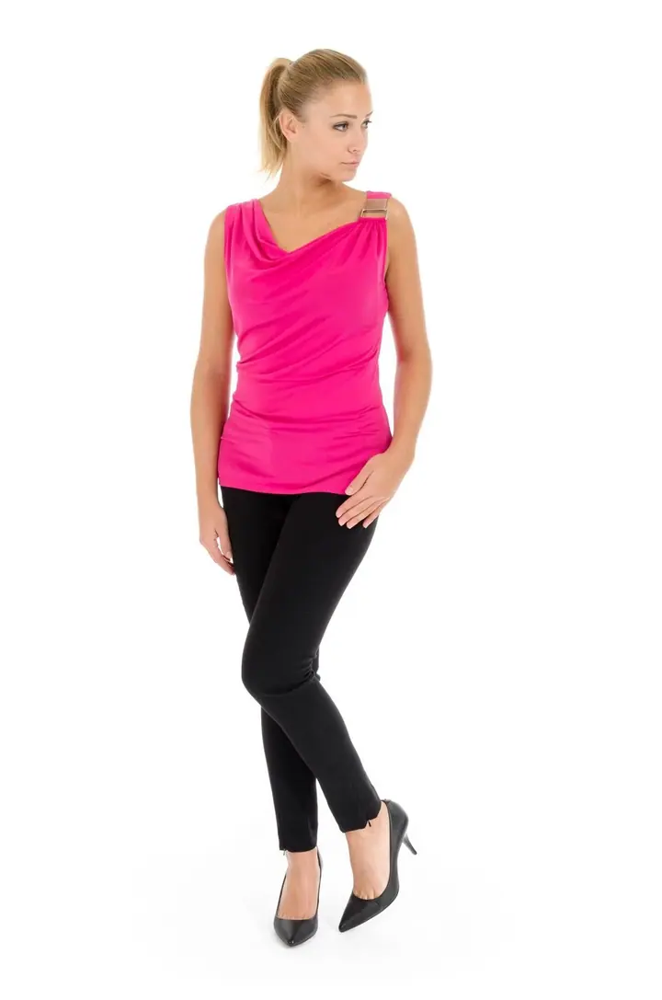
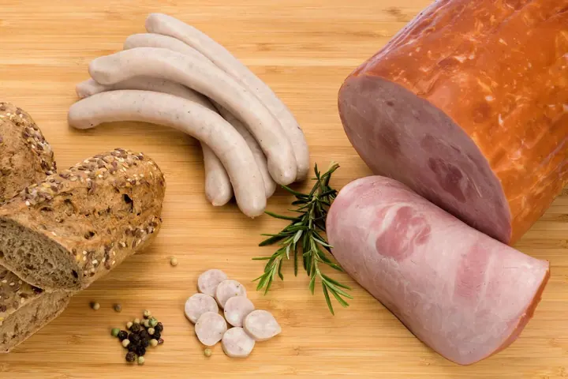

01 / 04
Produktová fotografie
Fotím produkty pro e-shopy, katalogy i reklamu, na čistém bílém pozadí nebo v aranžmá, kde vynikne materiál a detail. Focení produktu začíná od 3 000 Kč.
Zeptat se na termín→


Fotografie, které prodávají za vás
Zeptat se na termín →(01) Ahoj
Jmenuji se Jiří Čermák a fotím produkty , architekturu a reklamu. Pomáhám firmám, hotelům i realitním makléřům ukázat jejich práci tak, aby lidé chtěli vědět víc. Fotím také firemní portréty a akce.
(02) Co fotím
01 / 04
Fotím produkty pro e-shopy, katalogy i reklamu, na čistém bílém pozadí nebo v aranžmá, kde vynikne materiál a detail. Focení produktu začíná od 3 000 Kč.
Zeptat se na termín→02 / 04
Fotím budovy, hotely, interiéry i nemovitosti na prodej tak, aby byl prostor vzdušný, světlý a věrný skutečnosti. Realitní focení začíná od 3 500 Kč.
Zeptat se na termín→03 / 04
Připravím snímky pro kampaně, weby a tiskové materiály vaší značky. Společně vybereme řešení, které nejlépe odpovídá vašemu projektu.
Zeptat se na termín→Dále nabízím
Fotím profesionální portréty pro weby, LinkedIn a firemní prezentace, v kanceláři nebo venku. Portrét začíná od 2 500 Kč.
↗(04) Postup
Od první zprávy po hotovou galerii.
Krok 1 z 4
Napíšete nebo zavoláte, co potřebujete nafotit a k čemu fotky budou. Rád poradím, co bude pro váš projekt nejlepší.
Krok 2 z 4
Společně vybereme styl, místo a rozsah focení. Dostanete cenovou nabídku podle konkrétního zadání.
Krok 3 z 4
Fotím v ateliéru, u vás ve firmě, v hotelu nebo v nemovitosti. Pracuji s profesionálním světlem, aby každý detail seděl.
Krok 4 z 4
Fotky pečlivě vyberu a upravím a předám vám je připravené pro web, tisk i sociální sítě.
Dobrá fotka je to první, co zákazník uvidí
(05) Za objektivem
Jmenuji se Jiří Čermák a jsem profesionální fotograf s desetiletou praxí. Specializuji se na architekturu, produkt a reklamu, tedy na fotky, které mají vaší firmě přinést zákazníky.
Fotím jídlo, boty i auta, hotely, interiéry a nemovitosti na prodej. K tomu firemní portréty, konference a další akce. Ať jde o jeden produkt pro e-shop nebo o celou kampaň, vždy hledám světlo a úhel, ve kterém věc vypadá tak dobře, jak opravdu je.
Neváhejte se mi ozvat. Rád vám poradím s vaším projektem a společně vybereme nejvhodnější řešení.
Jiří
Jiří Čermák · Fotograf architektury, produktu a reklamy
Produktové focení začíná od 3 000 Kč, focení nemovitostí od 3 500 Kč a portréty od 2 500 Kč. Reklamu a akce oceňuji podle konkrétního zadání.
Ano. Fotím byty, domy, hotely i komerční prostory, interiéry i exteriéry, tak aby prostor působil světle a věrně.
Ano, produkty fotím na čistém bílém pozadí i v aranžmá, třeba jídlo na prkénku nebo obuv v detailu.
Ano, fotím konference, firemní akce a eventy, stejně jako portréty zaměstnanců pro web a prezentace.
(07) Kontakt
Napište pár vět o tom, co si představujete, a termín, který se vám hodí.